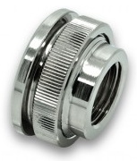
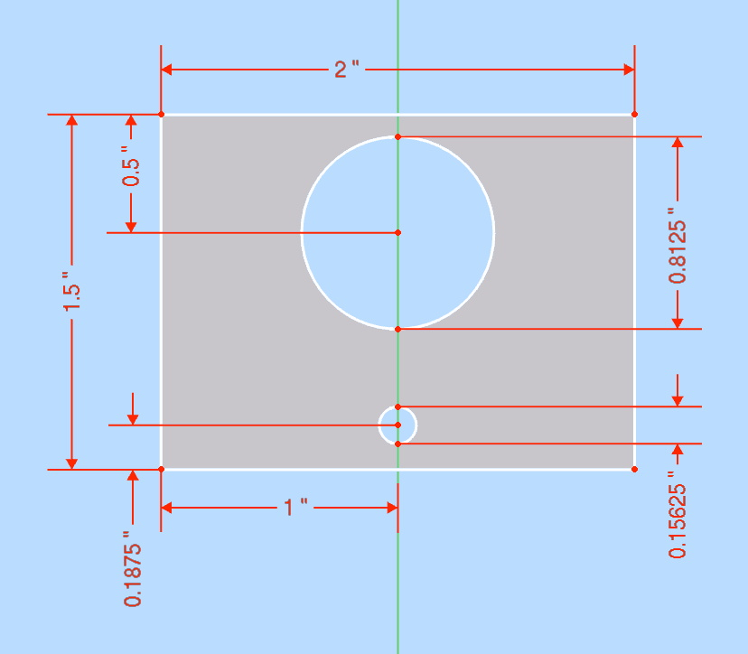

I do all the maintenance on my bikes by myself, so I need to be a little creative when it comes to replacing brake and clutch fluid, as this is usually a two-person job.
For the caliper end of things, I use Stahlbus bleeder valves. These are far superior to SpeedBleeders, and worth the price.
For the master cylinder end, I created a cheap brake fluid supply bottle out of a Mason jar and about $40 in computer water-cooling parts.
To use it:
Required PC water cooling parts from Performance PCs:
| ADT-XMM | Koolance Nozzle Coupling Adapter, G1/4" Male-Male - Silver (TWO REQUIRED) | $2.95 | |
| EK-AF-BV-10-G14-NK | EK-AF Ball Valve (10mm) G1/4" - Nickel | $18.99 | |
| EK-AF-PT-G14-NK | EK-AF Pass-Through G1/4" - Nickel | $6.99 |  |
| XSPC-G14-BULK-SL | XSPC G1/4" to G1/4" Bulkhead Fitting - Chrome Finish | $4.99 | |
| Total: | $36.87 |
Also needed:
Attach coupling adapter to both ends of ball valve.
Attach bulkhead fitting to one end.
Attach pass-through to the other end.
Find center of mason jar lid and drill a 5/8" hole. It's best to use a step bit, which are meant to cut clean holes in thin sheetmetal.
Insert bulkhead fitting in this hole, add o-ring, and tighten.
Drill 13/16" hole in aluminum plate about 1/2" from center of the long edge. Again, you want to use the step bit. This is for the valve & bottle.
Drill 5/32" hole about 3/16" from the center of the other long edge. An ordinary bit will do. This is for the M4 screw that will thread into the master cylinder reservoir.
Cut aluminum plate to 1-1/2"x2" for bracket. Clean up the sharp edges and corners with a file, or a flappy abrasive wheel on a bench grinder.
Insert valving in large hole and tighten nut.
You can remove the bracket for the rear brakes, which usually have a round threaded cap. If the rear brake proves to be difficult, you can buy another master cylinder lid and drill a 13/16" hole in it, plus another small hole to admit air.
